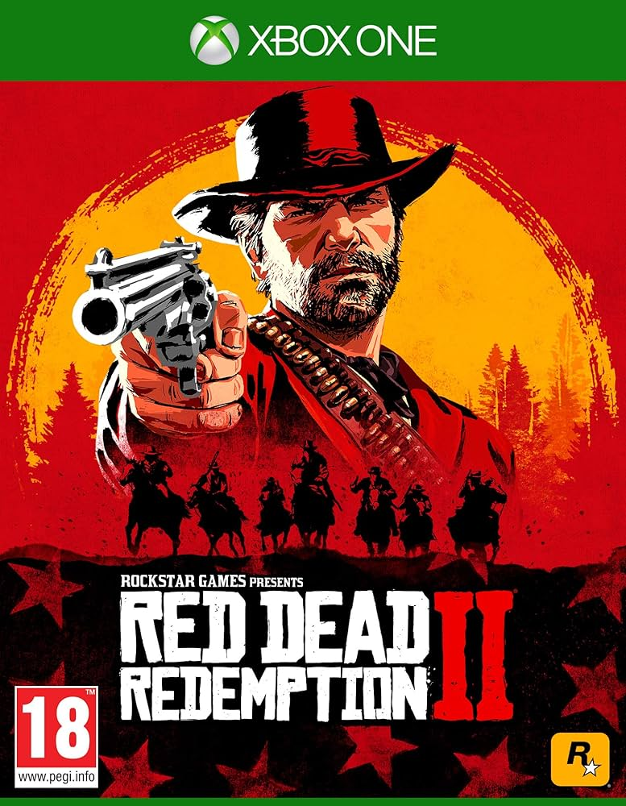

Red Dead Redemption and Undead Nightmare Finally Coming to PC
For the first time ever, John Marston’s legendary adventure in Red Dead Redemption is coming to PC, bringing with it a host of exciting new features. On October 29, both Red Dead Redemption and its iconic zombie-horror companion, Undead Nightmare, will hit PC in stunning detail.
This highly anticipated version, developed in collaboration with Double Eleven, boasts PC-specific enhancements that take the experience to new heights. Players can enjoy breathtaking visuals with native 4K resolution at up to 144Hz on supported hardware, along with ultrawide (21:9) and super ultrawide (32:9) monitor support. Plus, HDR10 brings richer color depth, and full keyboard and mouse functionality ensures precision control.
For the tech-savvy, the game is equipped with NVIDIA DLSS 3.7 and AMD FSR 3.0 upscaling technologies, along with DLSS Frame Generation. Players can also customize draw distances and shadow quality settings for the perfect blend of performance and aesthetics.
A new trailer is available, showcasing all these enhancements in action. Stay tuned for more updates, including how to pre-purchase the game later this week from the Rockstar Store, Steam, or the Epic Games Store.
Already available on Nintendo Switch, PlayStation 4, and Xbox, Red Dead Redemption and Undead Nightmare are about to make waves on PC—mark your calendars and get ready for an epic adventure like never before!